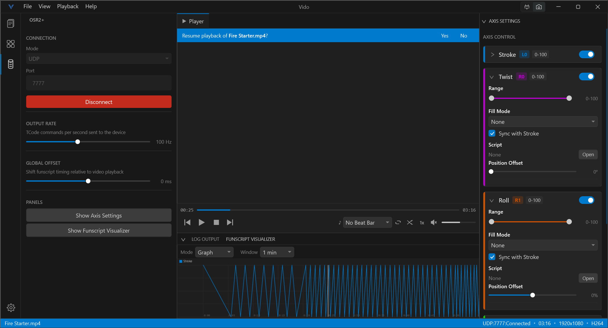

A modern video player for Windows with built-in haptic device control, real-time audio beat detection, and seamless playlist management.

Vido combines high-performance video playback with professional-grade haptic device control in a single, elegant application.
Hardware-accelerated decoding with GPU acceleration. Supports MP4, MKV, AVI, MOV, WMV, FLV, and WebM. Full transport controls, speed adjustment, looping, and shuffle.
Learn moreNative support for the OSR2+ haptic device over UDP or Serial. Four-axis control with real-time position updates at up to 200 Hz.
Learn moreAutomatic funscript detection and loading. Multi-axis support with real-time graph and heatmap visualizers in the bottom panel.
Learn moreCreate, organize, and save playlists with drag-and-drop reordering, shuffle mode, auto-save, and automatic restore on startup.
Learn moreNine continuous movement patterns for axes without funscripts. Save complete axis configurations as named profiles and switch instantly.
Learn moreGrab the MSI installer or portable ZIP from the latest release on GitHub.
Run the installer or extract the ZIP to any folder. No complex setup required.
Drag a video onto the window, press Ctrl+O, or double-click from Windows Explorer.
Press Space to start playback. Connect a device or create a playlist.
A clean, dark interface inspired by modern code editors. Every element is exactly where you need it.
Five panel icons give you instant access to every major feature. Click once to open, click again to collapse.
Contextual information panels that appear when you need them and stay out of the way when you don't.
Control every aspect of playback without touching the mouse.
| Operating System | Windows 10 or Windows 11 (64-bit) |
| Runtime | .NET 8 Desktop Runtime |
| Disk Space | ~100 MB |
| Supported Formats | MP4, MKV, AVI, MOV, WMV, FLV, WebM |
Download Vido and start playing videos with full haptic device integration in under two minutes.